Summary
This experiment investigates deployment canary rollout. Box-Behnken design to tune canary percentage, evaluation window, and error threshold for rollout safety.
The design varies 3 factors: canary pct (%), ranging from 5 to 25, evaluation window min (min), ranging from 5 to 30, and error threshold pct (%), ranging from 0.5 to 5.0. The goal is to optimize 2 responses: rollout safety score (score) (maximize) and deployment time min (min) (minimize). Fixed conditions held constant across all runs include orchestrator = kubernetes, strategy = canary.
A Box-Behnken design was chosen because it efficiently fits quadratic models with 3 continuous factors while avoiding extreme corner combinations — requiring only 15 runs instead of the 8 needed for a full factorial at two levels.
Quadratic response surface models were fitted to capture potential curvature and factor interactions. The RSM contour plots below visualize how pairs of factors jointly affect each response.
Key Findings
For rollout safety score, the most influential factors were error threshold pct (47.1%), evaluation window min (31.0%), canary pct (21.9%). The best observed value was 84.4 (at canary pct = 5, evaluation window min = 17.5, error threshold pct = 5).
For deployment time min, the most influential factors were error threshold pct (41.1%), canary pct (30.2%), evaluation window min (28.7%). The best observed value was 3.1 (at canary pct = 15, evaluation window min = 30, error threshold pct = 0.5).
Recommended Next Steps
- Run confirmation experiments at the predicted optimal settings to validate the model.
- Consider whether any fixed factors should be varied in a future study.
Experimental Setup
Factors
| Factor | Low | High | Unit |
|---|
canary_pct | 5 | 25 | % |
evaluation_window_min | 5 | 30 | min |
error_threshold_pct | 0.5 | 5.0 | % |
Fixed: orchestrator = kubernetes, strategy = canary
Responses
| Response | Direction | Unit |
|---|
rollout_safety_score | ↑ maximize | score |
deployment_time_min | ↓ minimize | min |
Configuration
{
"metadata": {
"name": "Deployment Canary Rollout",
"description": "Box-Behnken design to tune canary percentage, evaluation window, and error threshold for rollout safety"
},
"factors": [
{
"name": "canary_pct",
"levels": [
"5",
"25"
],
"type": "continuous",
"unit": "%"
},
{
"name": "evaluation_window_min",
"levels": [
"5",
"30"
],
"type": "continuous",
"unit": "min"
},
{
"name": "error_threshold_pct",
"levels": [
"0.5",
"5.0"
],
"type": "continuous",
"unit": "%"
}
],
"fixed_factors": {
"orchestrator": "kubernetes",
"strategy": "canary"
},
"responses": [
{
"name": "rollout_safety_score",
"optimize": "maximize",
"unit": "score"
},
{
"name": "deployment_time_min",
"optimize": "minimize",
"unit": "min"
}
],
"settings": {
"operation": "box_behnken",
"test_script": "use_cases/78_deployment_canary_rollout/sim.sh"
}
}
Experimental Matrix
The Box-Behnken Design produces 15 runs. Each row is one experiment with specific factor settings.
| Run | canary_pct | evaluation_window_min | error_threshold_pct |
|---|
| 1 | 15 | 5 | 0.5 |
| 2 | 15 | 17.5 | 2.75 |
| 3 | 25 | 17.5 | 5 |
| 4 | 25 | 17.5 | 0.5 |
| 5 | 15 | 17.5 | 2.75 |
| 6 | 15 | 17.5 | 2.75 |
| 7 | 5 | 17.5 | 5 |
| 8 | 25 | 5 | 2.75 |
| 9 | 15 | 5 | 5 |
| 10 | 25 | 30 | 2.75 |
| 11 | 5 | 17.5 | 0.5 |
| 12 | 15 | 30 | 5 |
| 13 | 5 | 5 | 2.75 |
| 14 | 5 | 30 | 2.75 |
| 15 | 15 | 30 | 0.5 |
Step-by-Step Workflow
1
Preview the design
$ doe info --config use_cases/78_deployment_canary_rollout/config.json
2
Generate the runner script
$ doe generate --config use_cases/78_deployment_canary_rollout/config.json \
--output use_cases/78_deployment_canary_rollout/results/run.sh --seed 42
3
Execute the experiments
$ bash use_cases/78_deployment_canary_rollout/results/run.sh
4
Analyze results
$ doe analyze --config use_cases/78_deployment_canary_rollout/config.json
5
Get optimization recommendations
$ doe optimize --config use_cases/78_deployment_canary_rollout/config.json
6
Multi-objective optimization
With 2 competing responses, use --multi to find the best compromise via Derringer–Suich desirability.
$ doe optimize --config use_cases/78_deployment_canary_rollout/config.json --multi
7
Generate the HTML report
$ doe report --config use_cases/78_deployment_canary_rollout/config.json \
--output use_cases/78_deployment_canary_rollout/results/report.html
Features Exercised
| Feature | Value |
|---|
| Design type | box_behnken |
| Factor types | continuous (all 3) |
| Arg style | double-dash |
| Responses | 2 (rollout_safety_score ↑, deployment_time_min ↓) |
| Total runs | 15 |
Analysis Results
Generated from actual experiment runs using the DOE Helper Tool.
Response: rollout_safety_score
Top factors: error_threshold_pct (47.1%), evaluation_window_min (31.0%), canary_pct (21.9%).
ANOVA
| Source | DF | SS | MS | F | p-value |
|---|
| Source | DF | SS | MS | F | p-value |
| canary_pct | 2 | 166.9258 | 83.4629 | 0.838 | 0.4671 |
| evaluation_window_min | 2 | 298.2933 | 149.1466 | 1.498 | 0.2801 |
| error_threshold_pct | 2 | 707.8875 | 353.9438 | 3.556 | 0.0786 |
| Lack | of | Fit | 6 | 310.0761 | 51.6793 |
| Pure | Error | 2 | 199.0867 | | |
| Error | 8 | 509.1628 | 99.5433 | | |
| Total | 14 | 1682.2693 | 120.1621 | | |
Pareto Chart
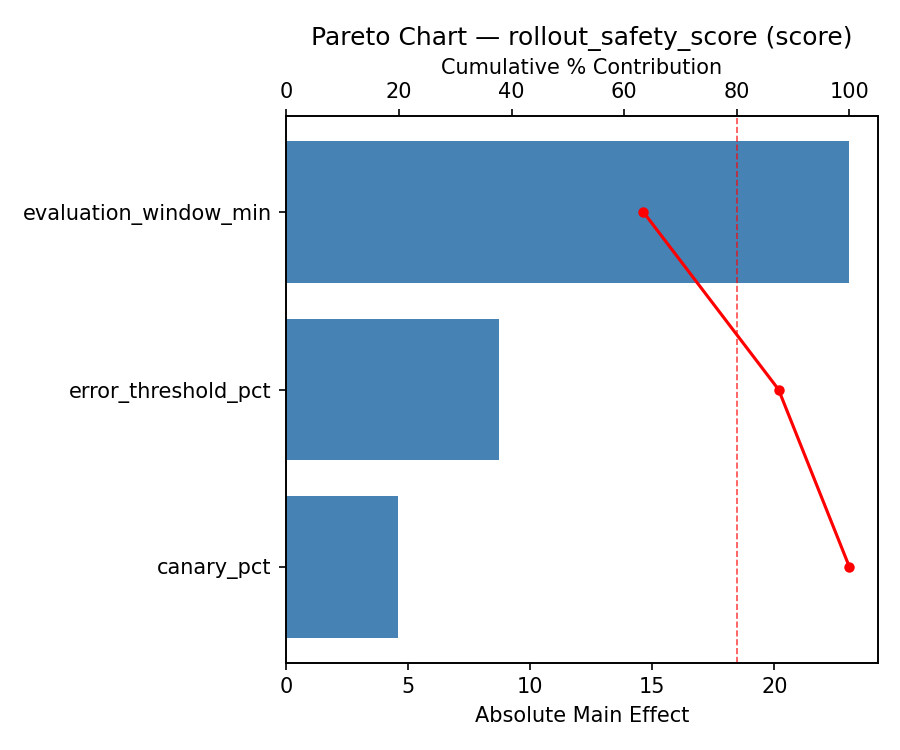
Main Effects Plot

Normal Probability Plot of Effects
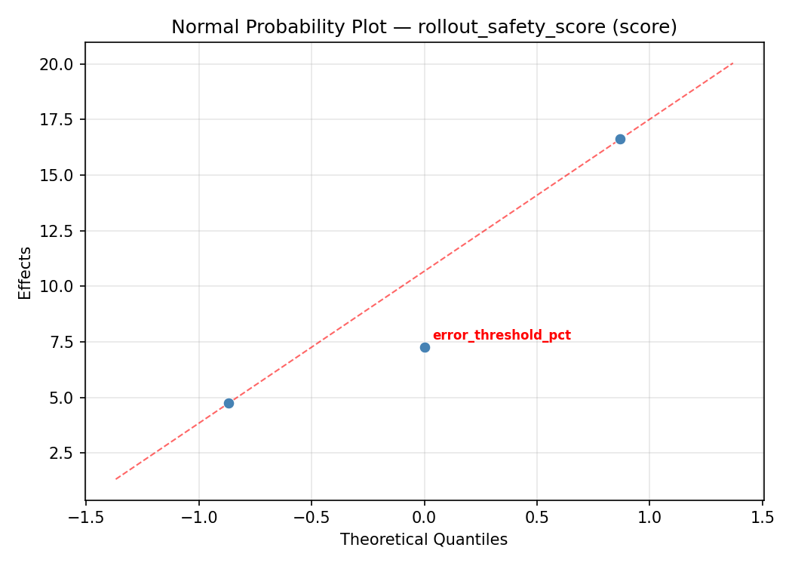
Half-Normal Plot of Effects
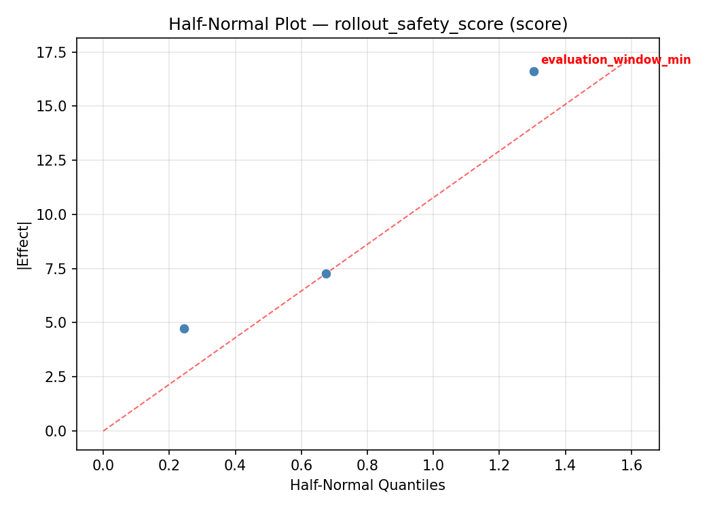
Model Diagnostics
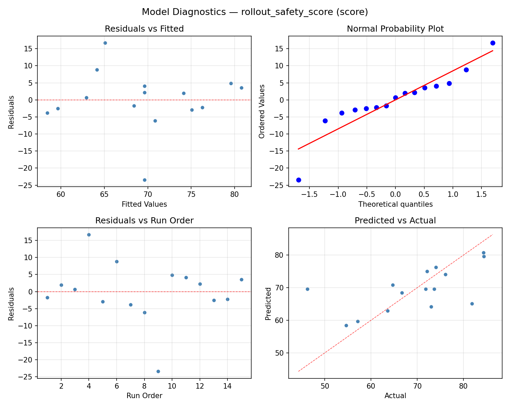
Response: deployment_time_min
Top factors: error_threshold_pct (41.1%), canary_pct (30.2%), evaluation_window_min (28.7%).
ANOVA
| Source | DF | SS | MS | F | p-value |
|---|
| Source | DF | SS | MS | F | p-value |
| canary_pct | 2 | 49.9479 | 24.9739 | 0.250 | 0.7846 |
| evaluation_window_min | 2 | 58.5479 | 29.2739 | 0.293 | 0.7536 |
| error_threshold_pct | 2 | 115.6679 | 57.8339 | 0.579 | 0.5822 |
| Lack | of | Fit | 6 | 73.7298 | 12.2883 |
| Pure | Error | 2 | 199.7267 | | |
| Error | 8 | 273.4564 | 99.8633 | | |
| Total | 14 | 497.6200 | 35.5443 | | |
Pareto Chart
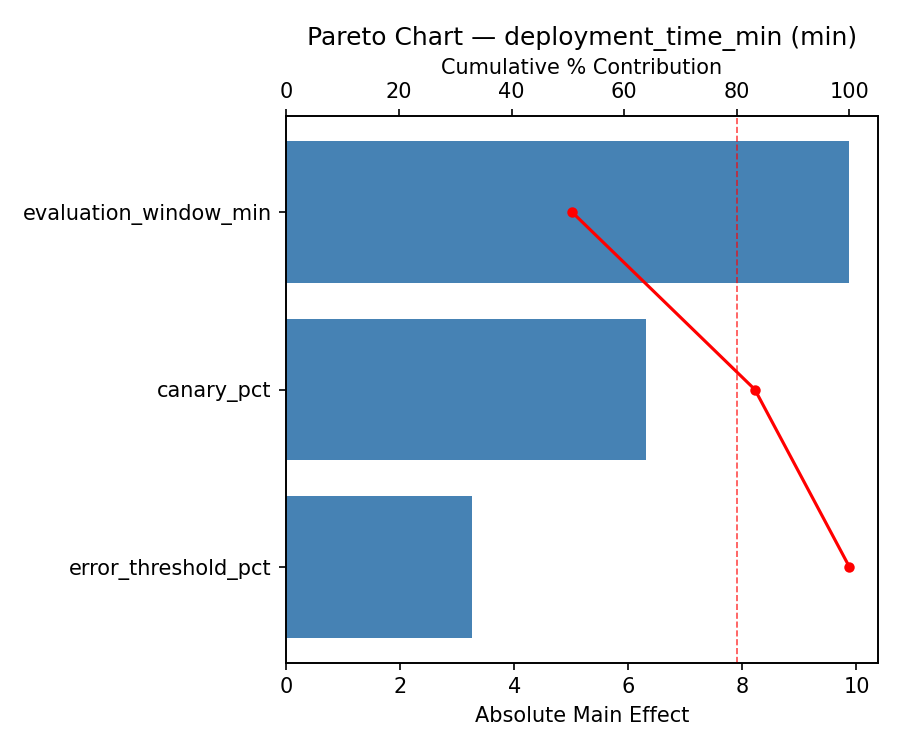
Main Effects Plot
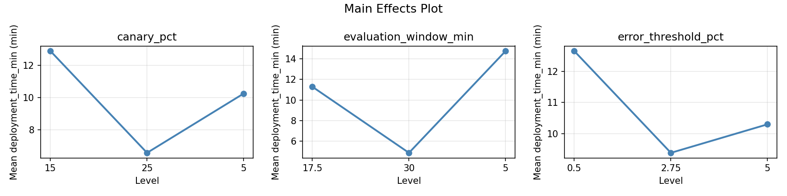
Normal Probability Plot of Effects
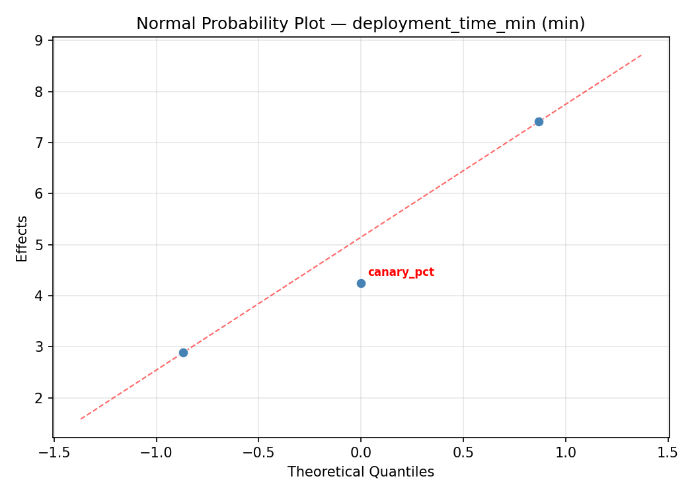
Half-Normal Plot of Effects
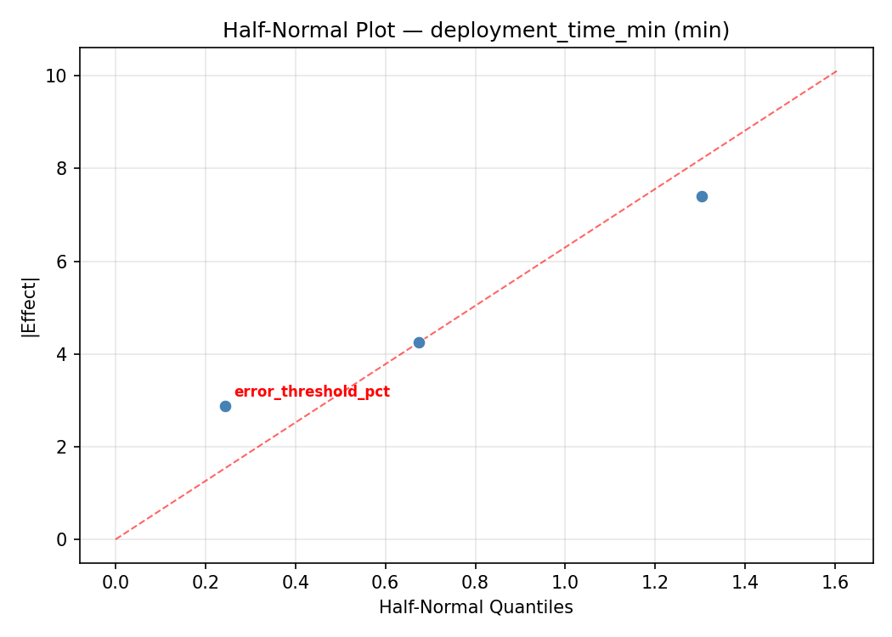
Model Diagnostics
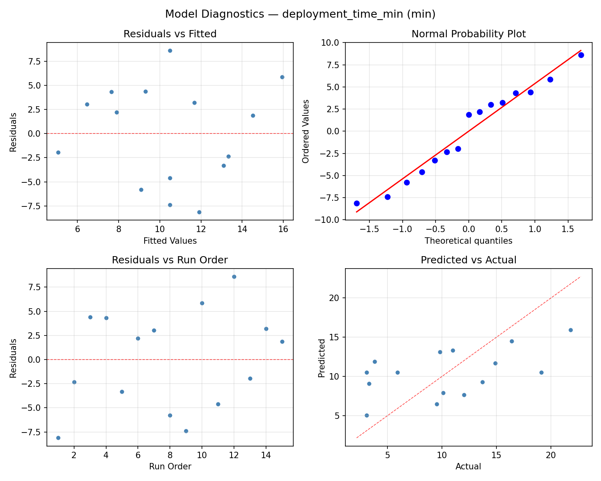
Response Surface Plots
3D surfaces fitted with quadratic RSM. Red dots are observed data points.
deployment time min canary pct vs error threshold pct
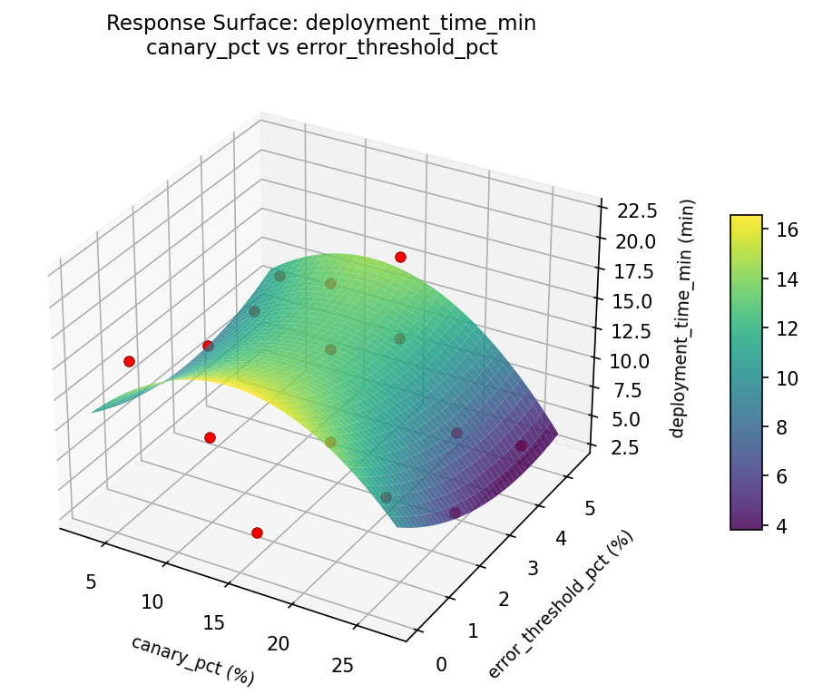
deployment time min canary pct vs evaluation window min

deployment time min evaluation window min vs error threshold pct

rollout safety score canary pct vs error threshold pct

rollout safety score canary pct vs evaluation window min
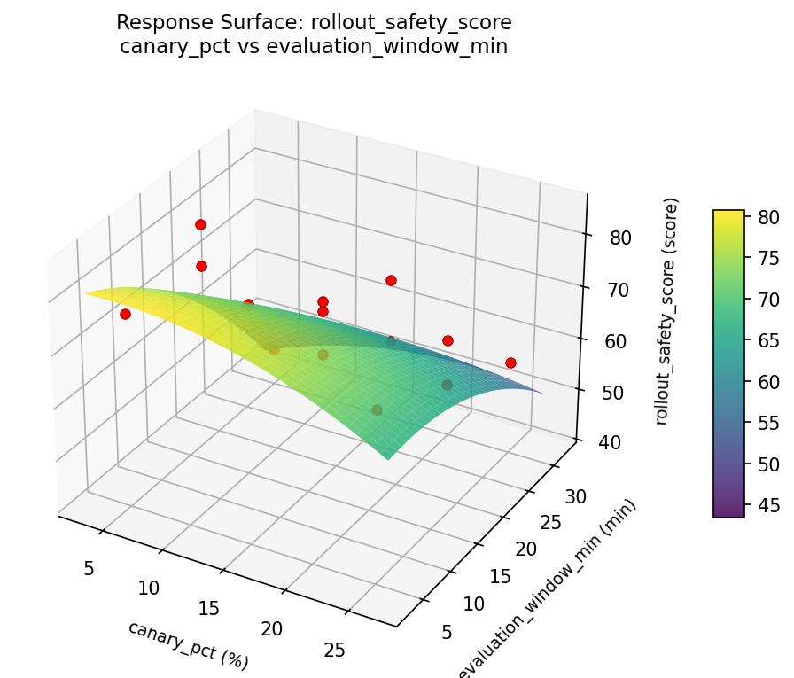
rollout safety score evaluation window min vs error threshold pct
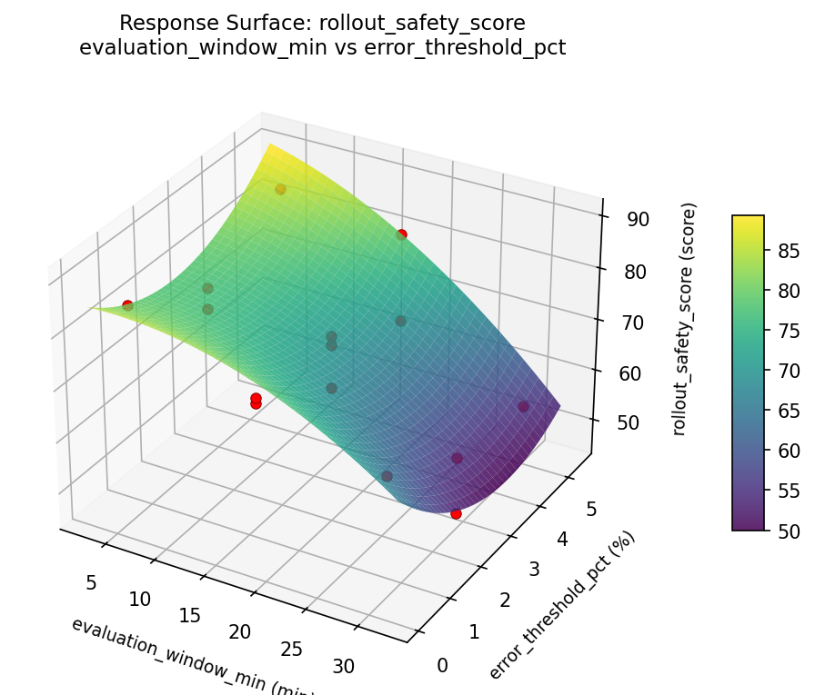
Multi-Objective Optimization
When responses compete, Derringer–Suich desirability finds the best compromise.
Each response is scaled to a 0–1 desirability, then combined via a weighted geometric mean.
Overall Desirability
D = 0.8163
Per-Response Desirability
| Response | Weight | Desirability | Predicted | Dir |
|---|
rollout_safety_score |
2.0 |
|
76.09 0.7568 76.09 score |
↑ |
deployment_time_min |
1.0 |
|
3.20 0.9497 3.20 min |
↓ |
Recommended Settings
| Factor | Value |
|---|
canary_pct | 25 % |
evaluation_window_min | 5 min |
error_threshold_pct | 0.5 % |
Source: from RSM model prediction
Trade-off Summary
Sacrifice = how much worse than single-objective best.
| Response | Predicted | Best Observed | Sacrifice |
|---|
deployment_time_min | 3.20 | 3.10 | +0.10 |
Top 3 Runs by Desirability
| Run | D | Factor Settings |
|---|
| #11 | 0.7374 | canary_pct=25, evaluation_window_min=30, error_threshold_pct=2.75 |
| #2 | 0.6889 | canary_pct=25, evaluation_window_min=5, error_threshold_pct=2.75 |
Model Quality
| Response | R² | Type |
|---|
deployment_time_min | 0.3506 | linear |
Full Multi-Objective Output
============================================================
MULTI-OBJECTIVE OPTIMIZATION
Method: Derringer-Suich Desirability Function
============================================================
Overall desirability: D = 0.8163
Response Weight Desirability Predicted Direction
---------------------------------------------------------------------
rollout_safety_score 2.0 0.7568 76.09 score ↑
deployment_time_min 1.0 0.9497 3.20 min ↓
Recommended settings:
canary_pct = 25 %
evaluation_window_min = 5 min
error_threshold_pct = 0.5 %
(from RSM model prediction)
Trade-off summary:
rollout_safety_score: 76.09 (best observed: 84.40, sacrifice: +8.31)
deployment_time_min: 3.20 (best observed: 3.10, sacrifice: +0.10)
Model quality:
rollout_safety_score: R² = 0.7245 (quadratic)
deployment_time_min: R² = 0.3506 (linear)
Top 3 observed runs by overall desirability:
1. Run #4 (D=0.7464): canary_pct=5, evaluation_window_min=5, error_threshold_pct=2.75
2. Run #11 (D=0.7374): canary_pct=25, evaluation_window_min=30, error_threshold_pct=2.75
3. Run #2 (D=0.6889): canary_pct=25, evaluation_window_min=5, error_threshold_pct=2.75
Full Analysis Output
=== Main Effects: rollout_safety_score ===
Factor Effect Std Error % Contribution
--------------------------------------------------------------
error_threshold_pct 16.3714 2.8303 47.1%
evaluation_window_min 10.7857 2.8303 31.0%
canary_pct 7.6000 2.8303 21.9%
=== ANOVA Table: rollout_safety_score ===
Source DF SS MS F p-value
-----------------------------------------------------------------------------
canary_pct 2 166.9258 83.4629 0.838 0.4671
evaluation_window_min 2 298.2933 149.1466 1.498 0.2801
error_threshold_pct 2 707.8875 353.9438 3.556 0.0786
Lack of Fit 6 310.0761 51.6793 0.519 0.7741
Pure Error 2 199.0867 99.5433
Error 8 509.1628 99.5433
Total 14 1682.2693 120.1621
=== Summary Statistics: rollout_safety_score ===
canary_pct:
Level N Mean Std Min Max
------------------------------------------------------------
15 7 71.5857 10.0606 57.1000 84.4000
25 4 64.0750 16.4935 46.2000 81.8000
5 4 71.6750 5.5362 63.6000 76.1000
evaluation_window_min:
Level N Mean Std Min Max
------------------------------------------------------------
17.5 7 65.9143 12.9332 46.2000 84.4000
30 4 68.9750 7.9437 57.1000 73.7000
5 4 76.7000 7.9804 66.7000 84.3000
error_threshold_pct:
Level N Mean Std Min Max
------------------------------------------------------------
0.5 4 71.7750 12.5255 54.6000 84.3000
2.75 7 74.7714 6.5480 64.7000 84.4000
5 4 58.4000 9.0638 46.2000 66.7000
=== Main Effects: deployment_time_min ===
Factor Effect Std Error % Contribution
--------------------------------------------------------------
error_threshold_pct 6.5179 1.5394 41.1%
canary_pct 4.8000 1.5394 30.2%
evaluation_window_min 4.5500 1.5394 28.7%
=== ANOVA Table: deployment_time_min ===
Source DF SS MS F p-value
-----------------------------------------------------------------------------
canary_pct 2 49.9479 24.9739 0.250 0.7846
evaluation_window_min 2 58.5479 29.2739 0.293 0.7536
error_threshold_pct 2 115.6679 57.8339 0.579 0.5822
Lack of Fit 6 73.7298 12.2883 0.123 0.9804
Pure Error 2 199.7267 99.8633
Error 8 273.4564 99.8633
Total 14 497.6200 35.5443
=== Summary Statistics: deployment_time_min ===
canary_pct:
Level N Mean Std Min Max
------------------------------------------------------------
15 7 11.0429 8.0247 3.1000 21.8000
25 4 7.6250 3.9204 3.1000 12.0000
5 4 12.4250 2.2500 10.1000 14.9000
evaluation_window_min:
Level N Mean Std Min Max
------------------------------------------------------------
17.5 7 11.6429 7.1949 3.1000 21.8000
30 4 7.2250 3.3500 3.1000 10.1000
5 4 11.7750 5.6216 3.8000 16.4000
error_threshold_pct:
Level N Mean Std Min Max
------------------------------------------------------------
0.5 4 11.6750 3.2160 9.5000 16.4000
2.75 7 12.4429 6.7082 3.3000 21.8000
5 4 5.9250 5.1938 3.1000 13.7000
Optimization Recommendations
=== Optimization: rollout_safety_score ===
Direction: maximize
Best observed run: #10
canary_pct = 5
evaluation_window_min = 17.5
error_threshold_pct = 5
Value: 84.4
RSM Model (linear, R² = 0.3348, Adj R² = 0.1534):
Coefficients:
intercept +69.6067
canary_pct +1.8500
evaluation_window_min -3.7500
error_threshold_pct +7.2750
RSM Model (quadratic, R² = 0.7096, Adj R² = 0.1868):
Coefficients:
intercept +61.8000
canary_pct +1.8500
evaluation_window_min -3.7500
error_threshold_pct +7.2750
canary_pct*evaluation_window_min +2.1250
canary_pct*error_threshold_pct -7.4250
evaluation_window_min*error_threshold_pct +1.7750
canary_pct^2 +9.4125
evaluation_window_min^2 +0.7625
error_threshold_pct^2 +4.4625
Curvature analysis:
canary_pct coef=+9.4125 convex (has a minimum)
error_threshold_pct coef=+4.4625 convex (has a minimum)
evaluation_window_min coef=+0.7625 convex (has a minimum)
Notable interactions:
canary_pct*error_threshold_pct coef=-7.4250 (antagonistic)
canary_pct*evaluation_window_min coef=+2.1250 (synergistic)
evaluation_window_min*error_threshold_pct coef=+1.7750 (synergistic)
Predicted optimum (from quadratic model, at observed points):
canary_pct = 5
evaluation_window_min = 17.5
error_threshold_pct = 5
Predicted value: 88.5250
Surface optimum (via L-BFGS-B, quadratic model):
canary_pct = 5
evaluation_window_min = 5
error_threshold_pct = 5
Predicted value: 93.3875
Model quality: Good fit — general trends are captured, some noise remains.
Factor importance:
1. error_threshold_pct (effect: 14.5, contribution: 44.2%)
2. canary_pct (effect: 10.9, contribution: 33.1%)
3. evaluation_window_min (effect: 7.5, contribution: 22.8%)
=== Optimization: deployment_time_min ===
Direction: minimize
Best observed run: #9
canary_pct = 15
evaluation_window_min = 30
error_threshold_pct = 0.5
Value: 3.1
RSM Model (linear, R² = 0.5240, Adj R² = 0.3942):
Coefficients:
intercept +10.5000
canary_pct +1.6875
evaluation_window_min -2.1500
error_threshold_pct +5.0125
RSM Model (quadratic, R² = 0.9148, Adj R² = 0.7615):
Coefficients:
intercept +6.1667
canary_pct +1.6875
evaluation_window_min -2.1500
error_threshold_pct +5.0125
canary_pct*evaluation_window_min +1.7250
canary_pct*error_threshold_pct -2.8500
evaluation_window_min*error_threshold_pct +2.2750
canary_pct^2 +2.2667
evaluation_window_min^2 +0.2417
error_threshold_pct^2 +5.6167
Curvature analysis:
error_threshold_pct coef=+5.6167 convex (has a minimum)
canary_pct coef=+2.2667 convex (has a minimum)
evaluation_window_min coef=+0.2417 convex (has a minimum)
Notable interactions:
canary_pct*error_threshold_pct coef=-2.8500 (antagonistic)
evaluation_window_min*error_threshold_pct coef=+2.2750 (synergistic)
canary_pct*evaluation_window_min coef=+1.7250 (synergistic)
Predicted optimum (from quadratic model, at observed points):
canary_pct = 5
evaluation_window_min = 17.5
error_threshold_pct = 5
Predicted value: 20.2250
Surface optimum (via L-BFGS-B, quadratic model):
canary_pct = 5
evaluation_window_min = 30
error_threshold_pct = 0.719492
Predicted value: -1.4618
Model quality: Excellent fit — surface predictions are reliable.
Factor importance:
1. error_threshold_pct (effect: 10.4, contribution: 57.1%)
2. evaluation_window_min (effect: 4.3, contribution: 23.5%)
3. canary_pct (effect: 3.5, contribution: 19.3%)